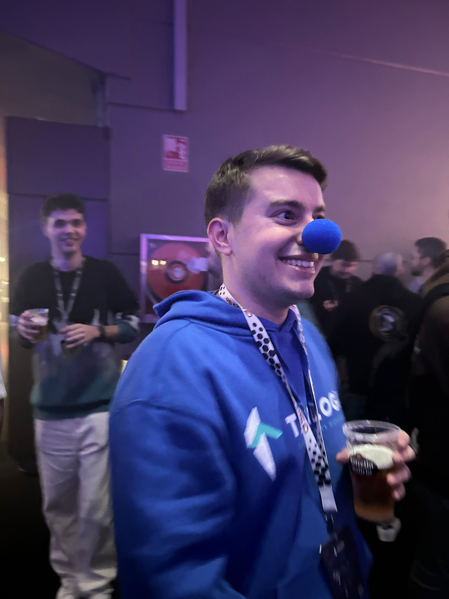

Más allá del DRM: Desafíos y estrategias contra la piratería audiovisual
28/02/2025 17:05 - 18:05
Nivel intermedio

Resumen de la actividad
El consumo de contenido pirata ha pasado a convertirse en una
práctica común para muchas personas a raíz de las circunstancias
actuales del ecosistema digital. Tanto es así, que cada vez más son
las noticias y medios que se hacen eco de esta problemática, sobre
todo en el mundo audiovisual. Si bien se están adoptando diferentes
medidas desde múltiples ámbitos, como es el legal, se quiere
destacar la relevancia de no dejar de lado la implementación de
mejoras técnicas en la prevención del fraude.
En esta ponencia se abordarán los fundamentos del DRM (Digital
Rights Management) en el contexto del streaming de vídeo, exponiendo
así sus debilidades más significativas:
- En primer lugar, se introducirá una explicación accesible sobre el
funcionamiento de la encriptación de vídeo y las bases del DRM,
proporcionando una visión clara de su importancia en la protección
del contenido digital.
- Se explorarán las vulnerabilidades
más destacadas de los sistemas de DRM actuales, como el CDN Leeching
o la falta de rotación en las claves de acceso, entrando en más
detalle con Widevine y la vulnerabilidad que permite la extracción
de claves. Esto último, acompañado de una PoC en la que se verá cómo
se extraen las claves y se reproduce el contenido.
Adicionalmente, se destacará cómo actores con conocimientos técnicos
limitados tienen acceso a un mercado donde se comercializa con
métodos para vulnerar estos sistemas.
La parte central de la charla estará dedicada a proponer medidas que
van más allá del DRM, necesarias para mitigar la piratería masiva.
Todas estas acciones estarán orientadas a complementar las
limitaciones del DRM y ofrecer una visión más integral para reducir
el impacto de la piratería.
Por último, se detallará cómo desde Tarlogic se abordan estos
problemas que presenta el fraude audiovisual y las soluciones que se
están aplicando a día de hoy.
Inés Cardiel Otero
Junior Cyberintelligence Analyst en Tarlogic
Graduada en Ingeniería Informática y posterior máster en Ciberinteligencia. Pese a que a nivel profesional he pasado por otras consultoras desarrollando labores alejadas de este área, desde hace más de un año me encuentro en Tarlogic ejerciendo como Junior Cyberintelligence Analyst. Apasionada de la tecnología y en especial por este área, la ciberinteligencia y la investigación OSINT.
Jesús Ramírez Gálvez
Junior Cyberintelligence Analyst en Tarlogic

Graduado en Ingeniería de la Ciberseguridad en la URJC. Organizador de la HackOn, evento de ciberseguridad de la URJC, durante 3 años. Actualmente soy analista junior en el departamento de Ciberinteligencia de Tarlogic, especializado en el fraude audiovisual.